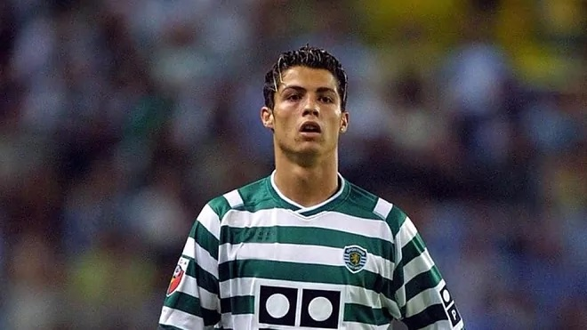
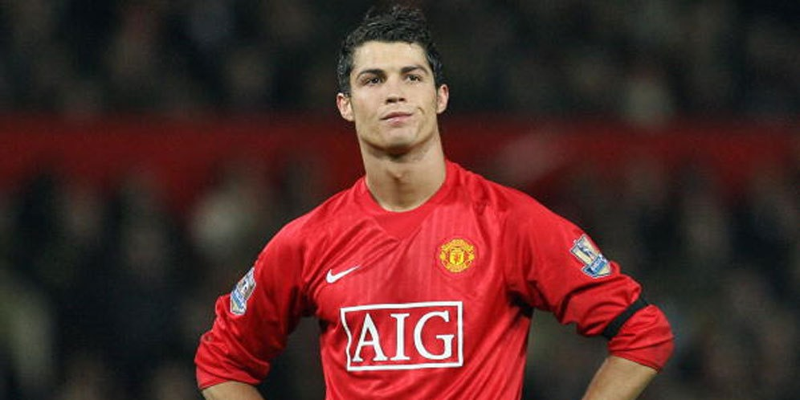
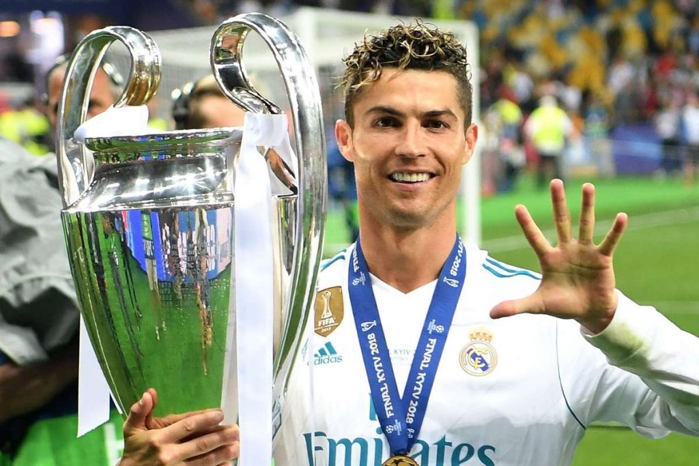

Cristiano Ronaldo dos Santos Aveiro sinh ra tại Santo António, một khu phố của Funchal, Madeira, mẹ anh là Maria Dolores dos Santos Aveiro, một đầu bếp, và bố là José Dinis Aveiro, một người làm vườn thời vụ. Ronaldo là con út trong gia đình, anh có một anh trai (Hugo) và hai chị gái Katie Aveiro và Elma Aveiro). Tên của Ronaldo là do bố và mẹ anh cùng nhau đặt, người mẹ đã chọn tên Cristiano còn Ronaldo đã được người cha đặt theo tiếng Bồ Đào Nha từ Ronald Reagan, diễn viên mà ông ưa thích và cũng là tổng thống Mỹ lúc bấy giờ. "Bị đuổi học cũng tốt, vì nếu tôi có ở lại trường cũng vậy thôi. Bị điểm thấp, quậy phá và trốn học thường xuyên là ba điều tôi nhớ nhất về con đường học vấn của mình". –Cristiano Ronaldo chia sẻ. Tuy nhiên, gia đình sớm tan rã khi cha mẹ Ronaldo ly thân lúc anh mới 11 tuổi, sau đó người cha cũng mất ở tuổi 52 vì bệnh viêm gan, hậu quả của việc nghiện rượu nặng.
2.SỰ NGHIỆP CÂU LẠC BỘ
2.1 Sự nghiệp bóng đá của Ronaldo tại CLB Sporting Lisbon
Sau khi gia nhập Sporting vài năm thì CR7 bị phát hiện mắc hội chứng tim đập nhanh. Thời điểm này anh vừa tròn
15
tuổi, tưởng chừng như anh đã mất hết bởi căn bệnh này không cho phép hoạt động mạnh huống chi là đá bóng.

Nhưng dường như, với CR7 tình yêu với bóng đá cao hơn tất thảy. Anh cầu xin mẹ để được đi chữa trị và làm phẫu
thuật
để có thể tiếp tục đá bóng. Và may mắn đã mỉm cười với tài năng trẻ này. Sau cuộc phẫu thuật thành công, CR7 lại
có
thể tiếp tục chơi bóng.
2.2 Sự nghiệp bóng đá của Ronaldo tại MU
Ở tuổi 16, tài năng của anh ngày 1 tỏa sáng. Tưởng chừng anh sẽ rời bỏ Sporting để tới với đội bóng danh tiếng
Liverpool nhưng ban lãnh đạo của Liverpool lại không thể chấp nhận một cầu thủ còn quá trẻ như thế.

Sự nghiệp bóng đá của Ronaldo bắt đầu chính thức vào; Mùa hè năm 2003, khi Sporting đánh bại United 3-1 trong lễ
khai trương sân vận động mới của họ Estádio José Alvalade tại Lisboa. CR7 đã lọt vào tầm ngắm của HLV Manchester
United Sir. Alex Ferguson. Và ngay sau đó bản hợp đồng mua đứt CR7 từ MU đã được ký duyệt. Ferguson đã quyết
định để
CR7 thay thế cho vị trí tiền vệ cánh phải của David Beckham.
Tháng 11/2009, CR7 bày tỏ ý định muốn rời khỏi MU để phát triển sự nghiệp. Và MU đã ký bản hợp đồng chuyển
nhượng
cầu thủ này cho Real Madrid với giá 80 triệu bảng. Ronaldo kết thúc sáu năm thi đấu tại Manchester United với
292
trận đấu và ghi được 118 bàn thắng cùng rất nhiều những danh hiệu cao quý mà cầu thủ nào cũng mơ ước.
2.3 Sự nghiệp bóng đá của Ronaldo khi chơi bóng tại Real Madrid
Trong mùa giải đầu tiên 2009-10 tại CLB mới, CR7 đã ghi với 33 bàn thắng trong 35 trận đấu. Đây là một con số ấn
tượng trong mùa giải đầu tiên anh chơi bóng tại Tây Ban Nha.
Với sự ra đi của Raúl vào mùa hè năm 2010, Ronaldo đã được trao lại chiếc áo đấu số 7 của Real Madrid.
